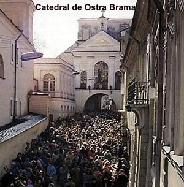
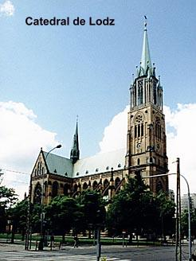
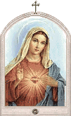
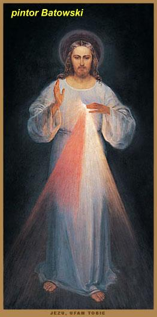
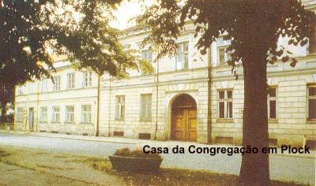
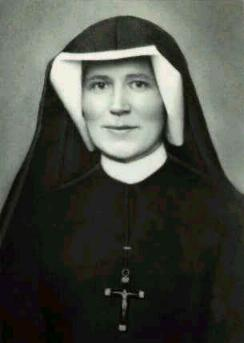
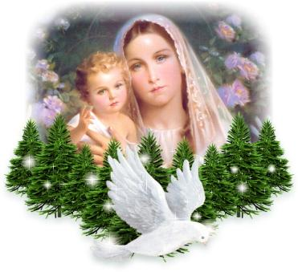
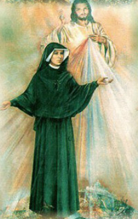

DESÍGNIO DIVINO

Em 4 de Março de 1936, entrei na Capela para uma adoração de cinco minutos, e estava rezando por certa alma. Então compreendi interiormente que nem sempre DEUS acolhe as nossas orações para uma determinada alma que rezamos, mas as destina a outras almas. Isto significa, que embora não levamos alívio para os sofrimentos no fogo do Purgatório daquela determinada alma, contudo, a nossa oração não é perdida. (Diário parágrafo 621 – página 193)
Uma vez, caminhando pelo corredor para a cozinha, ouvi na alma estas palavras: “Recita, sem cessar este Terço que te ensinei. Todo aquele que o recitar alcançará grande misericórdia na hora da sua morte. Os sacerdotes devem recomendá-lo aos pecadores como a última esperança de salvação. Ainda que o pecador seja o mais endurecido, se recitar este Terço uma só vez, alcançará a graça da Minha infinita misericórdia. Desejo que o mundo inteiro conheça a Minha misericórdia. Quero conceder graças inconcebíveis às almas que confiam na Minha misericórdia”. (Diário parágrafo 687 – página 208)
VIAJANDO EM BOA COMPANHIA
Na noite de 20 de Março de 1936, véspera de minha viagem de Vilna para Varsóvia, quando entrei na Capela por um momento, a fim de agradecer a DEUS todas as graças que ELE tinha me concedido nesta Casa, de repente a Sua presença me envolveu. Sentia-me como uma criança nos braços do melhor PAI, e ouvi estas palavras: “Nada temas, EU estou sempre contigo” . Seu Amor penetrou-me inteiramente, e senti que estava entrando numa familiaridade tão estreita com ELE que não tenho palavras para me expressar.(Diário parágrafo 629 – página 195)
Então, vi ao meu lado um dos Sete Espíritos (que sempre estão diante do Trono de DEUS), radiante como anteriormente, sob uma forma luminosa. Sempre estava ao meu lado, e, mesmo enquanto estava viajando de trem. Reparei que encima de cada uma das Igrejas por onde passava se encontrava um Anjo, embora envolvido por uma luz mais pálida do que a do Espírito que me acompanhava. E cada um dos Espíritos que cuidavam das Igrejas inclinava-se diante desse Espírito que estava ao meu lado. Quando atravessei o portão do Convento em Varsóvia, esse Espírito desapareceu. Agradeci a DEUS por Sua Bondade, por nos dar Anjos por companheiros. Ó! Como as pessoas consideram pouco o fato de terem sempre perto de si um hóspede como este, que é ao mesmo tempo, testemunha de tudo! Pecador lembre-vos que também vós tendes uma testemunha dos vossos atos. (Diário parágrafo 630 – página 195)
CONHECER A VONTADE DE DEUS

A essência das virtudes é a Vontade de DEUS. Quem cumpre fielmente a Vontade Divina se exercita em todas as virtudes. Em todos os acontecimentos e circunstâncias da vida, adoro e bendigo a Santa Vontade de DEUS. Ela é objeto do meu amor. (Diário parágrafo 678 – página 207)
PODER DO TERÇO DA MISERICÓRDIA
Em determinado momento de Setembro de 1936, ouvi estas palavras do SENHOR: “Minha filha, divulgue a Minha inconcebível misericórdia. Desejo que a Festa da Misericórdia seja refúgio e abrigo para todas as almas, especialmente para os pecadores. Neste dia, estão abertas as entranhas da Minha misericórdia. Derramo todo um mar de graças sobre as almas que se aproximam da fonte de Minha misericórdia. A alma que se confessar e comungar alcançará o perdão das culpas e das penas. Nesse dia, estão abertas todas as comportas Divinas, pelas quais fluem as graças. Que nenhuma alma tenha medo de se aproximar de MIM, ainda que seus pecados sejam como o escarlate. A Minha misericórdia é tão grande que, por toda eternidade, nenhuma mente, nem humana, nem angélica poderá sondá-la. Tudo o que existe saiu das entranhas da Minha misericórdia. Toda alma contemplará em relação a MIM, por toda eternidade, todo o Meu Amor e a Minha misericórdia. A festa da misericórdia saiu das Minhas entranhas. Desejo que seja celebrada solenemente no Primeiro Domingo depois da Páscoa. A humanidade não terá paz enquanto não se voltar à fonte da Minha misericórdia”. (Diário parágrafo 699 – página 211)
8 de Dezembro – A IMACULADA CONCEIÇÃO DA MÃE DEUS
Desde a
manhã, senti a proximidade da MÃE SANTÍSSIMA. Durante a Santa Missa vi NOSSA
SENHORA tão 
09 de Dezembro de 1936 – Internação no Sanatório
Estou viajando para Pradnik, perto de Cracóvia, a fim de ficar internada para tratamento no Hospital. Depois da consulta, o Doutor Adam Silberg, médico do Sanatório decidiu que vou ficar aqui até Abril de 1937. Estou sendo enviada para lá pela grande solicitude das Superioras, especialmente a nossa querida Madre Geral, que tem tanta boa vontade com as Irmãs doentes. È a Vontade de DEUS, embora desejasse permanecer no convívio das Irmãs no Convento. (Diário - parágrafos 794 e 798 – páginas 231 e 232)
AS ALMAS SUPLICAM ORAÇÕES

No dia seguinte, já depois do meio dia, quando entrei na sala vi uma pessoa agonizante e soube que a agonia tinha começado a noite. Como verifiquei, foi na hora em que aquela alma me pediu orações. Neste momento ouvi na minha alma a voz: “Reza o Terço da Misericórdia que te ensinei”. Corri a buscar o terço, ajoelhei-me junto da agonizante e rezei o Terço com todo o fervor. De repente, a agonizante abriu os olhos e olhou para mim. Mal tive tempo de rezar todo o Terço, quando ela expirou numa paz extraordinária. Pedi ardentemente ao SENHOR que cumprisse a promessa que me tinha feito pela recitação do Terço. JESUS me deu a conhecer que aquela alma tinha obtido a graça que ELE me prometera. Esta alma foi à primeira na qual se cumpriu a promessa do SENHOR. Senti o poder da misericórdia que envolveu aquela alma. (Diário parágrafo 810 – página 234)
Quando entrei no meu quarto, ouvi estas palavras: “Defendo toda alma que recitar esse Terço na hora da morte, como se fosse a Minha própria glória, ou quando outros o recitarem junto a um agonizante, eles conseguirão a mesma indulgência. Quando recitam este Terço junto a um agonizante, aplaca-se a ira Divina, a misericórdia insondável envolve a alma e abrem-se as entranhas da Minha misericórdia, movidas pela dolorosa Paixão do Meu Filho”. (Diário parágrafo 811 – página 234)
Ó, se todos conhecessem como é grande a misericórdia do SENHOR e como todos nós precisamos dela, especialmente naquela hora decisiva.
19 de Dezembro de 1936 – Hoje à noite, senti em minha alma que certa pessoa tinha necessidade da minha oração. Logo comecei a rezar em benefício dela, por que sei interiormente quando um espírito me suplica orações. Rezo até me sentir tranquila, por que quando isto acontece, sei que minha oração produziu o efeito desejado. (Diário parágrafo 834 – página 238)
Especialmente agora, quando estou aqui neste Hospital, sinto uma grande união interior com os agonizantes, que no inicio da agonia pedem as minhas orações. DEUS me deu uma misteriosa união com eles. Agora, isso sucede com mais frequência e, por isso, tenho a possibilidade de comprovar até a hora em que começou a agonia. Hoje, às onze horas da noite, fui despertada e senti que junto de mim estava um espírito pedindo orações. Há uma espécie de força que atua em meu interior me obrigando a rezar, embora, por minha vontade pessoal, sempre estou disposta a rezar pelas almas. A minha visão é puramente espiritual, através de uma repentina luz que DEUS me concede neste momento. Rezo até me sentir tranquila na alma, e nem sempre levo o mesmo tempo. Sucede às vezes que rezo uma “AVE MARIA” e já fico tranquilizada, então recito o Salmo “Das Profundezas” (Salmo 129) para concluir. Outras vezes, acontece que recito todo o Terço da Misericórdia e só então me encontro em paz. E aqui também, verifiquei que, se me sinto impelida à oração por mais tempo, ou seja, se sinto a inquietação interior, essa alma encontra-se em maiores dificuldades, numa agonia mais longa. (Diário parágrafo 835 – página 239)
NATAL DE 1936
Durante a Santa Missa da Meia noite, a presença de DEUS me envolveu totalmente. Um pouco antes da Elevação vi NOSSA SENHORA, o MENINO JESUS e SÃO JOSÉ. Nossa MÃE SANTÍSSIMA me disse estas palavras: “Minha filha Faustina, aqui tens o mais precioso Tesouro”, e me entregou o MENINO JESUS. Quando segurei o MENINO JESUS nos meus braços, a minha alma sentiu uma alegria tão inexplicável que não tenho condições de descreve-la. Mas, em seguida, o MENINO JESUS cresceu e tornou-se um grande sofredor, repleto de chagas e desapareceu a visão, era quase o momento da Santa Comunhão. Quando recebi NOSSO SENHOR na Sagrada Eucaristia, a minha alma tremeu inteiramente sob a influência da presença de DEUS. Na Santa Missa do dia seguinte, vi o MENINO DEUS por um breve instante, durante a Elevação. (Diário parágrafo 846 – página 242)
2 de Fevereiro de 1937
Hoje, a dedicação Divina penetrou a minha alma desde cedo. Durante a Santa Missa pensei que veria o MENINO JESUS, como acontece ultimamente, no entanto, vi JESUS Crucificado. JESUS estava pregado a Cruz e passando por grandes tormentos. Senti que aqueles sofrimentos de JESUS penetraram vigorosamente o meu corpo e a minha alma, ainda que de maneira invisível, mas nem por isso menos dolorosa. (Diário parágrafo 913 – página 258)
26 de Março de 1937 – Sexta-feira.
Logo de manhã senti no meu corpo as cinco chagas da Paixão do SENHOR. Esse sofrimento durou até as três da tarde. Embora, exteriormente, não haja nenhum vestígio (as chagas não aparecem), esses tormentos não são menos dolorosos (interiormente). Alegro-me por JESUS me defender do olhar humano. (Diário parágrafo 1055 – página 289)
27 de Março de 1937 – Retorno a Cracóvia
Hoje voltei de
Pradnik depois de quase quatro (4) meses de tratamento, por tudo rendo muitas
graças a DEUS e, 
Durante a Santa Missa do dia 4 de Abril, a Irmã Mestra das Noviças tocou no órgão e cantou uma linda canção sobre a misericórdia de DEUS. Pedi ao SENHOR que lhe desse a conhecer mais profundamente o abismo dessa inconcebível misericórdia. (Diário parágrafo 1077 – página 293)
Hoje, 07 de Abril, quando certa pessoa entrou na Capela, no momento em que eu rezava, senti uma terrível dor nas mãos, nos pés e no lado, como JESUS sentiu na Sua Paixão. Isto durou um breve momento. É um sinal que o SENHOR me concedeu, para conhecer uma alma que não tem a graça de DEUS (que está em pecado). (Diário parágrafo 1079 – página 293)
No dia 10 de Abril, a Madre Superiora me deu para ler um artigo sobre a Misericórdia Divina com a Imagem de JESUS, aquela que foi pintada. Este artigo foi escrito pelo Padre Michal Sopocko e inserido no Semanário Católico de Vilna, divulgando a Misericórdia do SENHOR. Este artigo nos foi enviado pelo próprio Padre, zeloso apóstolo da Misericórdia Divina. No texto, estão contidas as palavras que NOSSO SENHOR me disse, tendo diversas expressões transcritas ao pé da letra. (Diário parágrafo 1081 – página 293)
Dia 13 de Abril, eu tive que permanecer na cama o dia todo. Apoderou-se de mim uma tosse tão violenta, que me enfraqueceu tanto que não tive forças para andar. No dia seguinte estava tão mal, que com dificuldade levantei-me para a Santa Missa. Sentia-me mais doente do que quando fui enviada a Pradnik para tratamento. Quando recebi a Santa Comunhão, não sei como, me senti impelida a fazer uma oração e comecei a rezar desta maneira: “Ó JESUS, que Vosso Sangue, puro e saudável, circule no meu organismo doente, e que o Vosso Corpo, puro e saudável, transforme o meu corpo doente, e que pulse em mim uma vida saudável e vigorosa, se realmente for da Vossa Santa Vontade que eu me encarregue desta obra, e esse, será para mim um sinal da Vossa Santa Vontade”. (Diário parágrafos 1085 e 1089 – página 294)
Quando assim rezava, subitamente senti como que um abalo em todo o organismo e, de repente, me senti inteiramente bem. Tenho a respiração limpa, como se nunca tivesse sofrido dos pulmões, não sinto dores, e isso é sinal que tenho de me incumbir desta obra. JESUS infundiu em minha alma força e coragem para a ação. Agora compreendo que o SENHOR, se exige alguma coisa da alma, dá-lhe a possibilidade de executá-la e, pela graça, a torna capaz de realizar o que dela exige. E ouvi estas palavras: “Vai dizer à Superiora que estás bem de saúde”. Por quanto tempo ficarei boa não sei, nem pergunto. Sei apenas que, no momento, estou gozando de boa saúde. O futuro não me pertence. Pedi a saúde como sinal e testemunho da Vontade de DEUS e não para buscar alívio no sofrimento. (Diário parágrafos 1089/1090/1091 – páginas 294 e 295)
25 de Abril – Os meus propósitos particulares são ainda os mesmos, a saber: minha união com JESUS misericordioso e silêncio total. (Diário parágrafo 1105 – página 297)
09 de Julho – Esta noite, veio me visitar uma das Irmãs falecidas. Ela me pediu um dia de jejum e que nesse dia eu oferecesse todos os meus exercícios por ela: concordei.
No dia seguinte, já pela manhã, fiz a intenção de oferecer tudo por essa Irmã. Durante a Santa Missa vivi, por um momento, o seu tormento: senti na alma uma tão grande fome de DEUS que me parecia que estava morrendo de desejo de me unir a ELE. Isso durou um breve momento, mas compreendi a grandeza daquela saudade de DEUS que a alma sente no Purgatório. Logo depois da Santa Missa pedi a Madre Superiora autorização para o jejum, porém não o obtive por causa da minha doença. Quando entrei na Capela, ouvi estas palavras: “Se a Irmã estivesse jejuando, eu obteria o valor desse alívio apenas à noite, mas pela obediência, que proibiu que a Irmã jejuasse, recebi o benefício do alívio imediatamente. Grande poder tem a obediência”. Após estas palavras ouvi: “DEUS lhe pague”.(Diário parágrafos 1185/1186/1187 – páginas 310 e 311)

No dia 10 de Agosto, voltei para Cracóvia em companhia de uma das Irmãs. A minha alma está envolta em sofrimento. Uno-me ao SENHOR sem cessar por um ato de minha vontade. E minha vida continuou com dias melhores e outros em que a doença se manifestava com mais vigor. Mas sempre, entreguei os meus sofrimentos causados pela própria doença e meus sacrifícios, assim como minhas orações, as Santas Missas, Sagradas Comunhões, jejuns e mortificações de todos os tipos, suplicando a misericórdia de DEUS em benefício das almas que padecem no Purgatório e pela conversão dos pecadores, para que encontrem o caminho do SENHOR.
Quando percebi como é perigoso, hoje em dia, ficar na Portaria, por causa de tumultos revolucionários e do ódio que muitos malvados têm aos Conventos fui conversar com o SENHOR na Capela e, pedi que não permitisse a nenhum homem mau ousar se aproximar da portaria. Então ouvi estas palavras:“Minha filha, desde o momento em que foste para a portaria, coloquei um Querubim no portão, para cuidar dele, fique tranquila” .Quando voltei da conversa que tive com o SENHOR, vi uma nuvenzinha branca, e dentro dela um Querubim com os braços cruzados. O seu olhar era como o raio. Pude conhecer como o fogo do amor a DEUS arde no olhar dele! (Diário parágrafo 1271 – página 330)
19 de Setembro de 1937. Hoje, o meu irmão Stasio veio me visitar. Alegrei-me imensamente com essa bela alminha, que também pretende se entregar ao serviço de DEUS, ou seja, o próprio DEUS a está atraindo para o Seu Amor. Durante a conversa, conheci como é agradável a DEUS essa pequena alma. Recebi autorização da Madre Superiora para me encontrar mais frequentemente com ele. Quando meu irmão me pediu conselho sobre em qual Congregação deveria entrar, respondi: “Afinal, você é que deve saber melhor o que DEUS está exigindo”. Indiquei-lhe a Ordem dos Jesuítas, mas acrescentei: “Mas ingresse onde quiser” . Prometi rezar por ele e fiz uma novena ao CORAÇÃO Divino, por que entendo que nessa questão, é mais útil a oração do que o conselho. (Diário parágrafo 1290 – página 334)
10.10.1937 – Ó meu JESUS, para Vos agradecer por muitas graças ofereço-Vos a alma e o corpo, a inteligência e a vontade e todos os sentimentos do meu coração. Vossa morte JESUS, deu origem a uma fonte de vida que jorrou para as almas e abriu-se um mar de misericórdia para o mundo. Ó fonte de vida, insondável misericórdia de DEUS, envolvei o mundo todo e derramai-Vos sobre nós. (Diário parágrafos 1318/1319 – páginas 340/341)
O SENHOR disse: “Às TRÊS HORAS da tarde, implora à Minha Misericórdia especialmente pelos pecadores e, ao menos por um breve tempo, reflete sobre a Minha Paixão, especialmente sobre o abandono em que ME encontrei no momento da agonia. Esta é a HORA de Grande Misericórdia para o Mundo inteiro. Permitirei que penetres na Minha tristeza mortal. Nessa HORA nada negarei à alma que ME pedir pela Minha Paixão”.(Diário parágrafo 1320 – página 341)
VIGÍLIA DO NATAL de 1937
Após a Santa Comunhão, a MÃE DE DEUS me deu a conhecer a preocupação que tinha em Seu Coração, por causa do FILHO DE DEUS (o Seu JESUS). Mas essa preocupação estava tão impregnada de tal perfume de abandono à Vontade de DEUS, que ao invés de preocupação, chamo isto de delícia. Compreendi como a minha alma (e de todos os cristãos) deve aceitar toda a Vontade de DEUS. (Diário parágrafo 1437 – página 365)
No final da Santa Missa, me sentia tão fraca que tive que sair da Capela e ir para a cela, não podendo participar do chá em comum. Mas a minha alegria foi muito grande durante todo o Natal, por que a minha alma estava incessantemente unida ao SENHOR. (Diário parágrafo 1443 – página 367
06 de Janeiro de 1938
O SENHOR me deu a conhecer, como muitos Bispos estavam refletindo sobre a Festa da Misericórdia Divina. (Podemos supor que os Bispos poloneses, tendo recebido do Padre Sopocko o memorial sobre a Misericórdia Divina, estavam debatendo sobre esse assunto nas sessões do episcopado) Uns estavam encantados com a Obra de DEUS, outros demonstravam descrença, mas, apesar de tudo, a Obra de DEUS ia sair gloriosamente. (Diário parágrafo 1463 – página 371)
04 de Fevereiro de 1938
Entrando por um momento na Capela, o SENHOR me disse: “Minha filha, ajuda-me a salvar um pecador agonizante. Reza por ele o Terço que te ensinei”. Quando comecei a recitar o Terço, vi o agonizante em terríveis tormentos e lutas. O Anjo da Guarda o defendia, mas, estava como que impotente diante da enormidade da miséria dessa alma. Toda uma multidão de demônios estava esperando por essa alma. No entanto, durante a recitação do Terço vi JESUS, da maneira como está pintado na Imagem. À medida que eu rezava, os raios que saíam do CORAÇÃO DO SENHOR envolveram o enfermo, e as forças do mal fugiram em pânico. O enfermo exalou tranquilamente o ultimo suspiro. Quando voltei a mim, compreendi como a recitação deste Terço da Misericórdia é importante para os agonizantes, aplaca a ira de DEUS. (Diário parágrafo 1565 – página 398)
08 de Fevereiro de 1938 – VISÃO DA MÃE DE DEUS
Vi NOSSA
SENHORA em grande claridade, vestida de branco, cingida na cintura por um cinto
de ouro. Havia 
12/Fevereiro/1938 – Ó meu JESUS, não tenho condições de enumerar os Vossos benefícios...
“Minha filha, a luta continuará até a morte. O último suspiro a encerrará. Vencerás pela mansidão”.
No dia seguinte, vi como NOSSO SENHOR ia a contragosto a algumas almas na Santa Comunhão. E me disse estas palavras: “Vou a alguns corações como se fosse a uma segunda Paixão”. (Certas pessoas que não estão preparadas para receber dignamente o SENHOR na Sagrada Eucaristia). (Diário parágrafo 1596/1597/1598 – páginas 406/407)
25 de Março de 1938 – Hoje vi NOSSO SENHOR sofrendo. ELE se inclinou sobre mim e disse sussurrando: “Minha filha, ajuda-ME a salvar os pecadores”. Então penetrou na minha alma um desejo ardente de salvar almas. Quando voltei a mim, sabia de que maneira devo salvar as almas e preparei-me para maiores sofrimentos. Hoje, as dores aumentaram e, além disso, senti as chagas nas mãos, nos pés e no lado, que suportei com paciência. Sentia a maldade do inimigo das almas, mas ele não me tocou. (Diário - parágrafos 1645/1646 – página 417)
21 de Abril – À noite, A Irmã Dawida Cedro que cuidava de mim veio me dizer: “Amanhã a Irmã não receberá NOSSO SENHOR (na Sagrada Comunhão), por que está muito cansada, depois veremos como será”. Isso me doeu imensamente, mas respondi com grande serenidade:“Está bem”, submetendo-me inteiramente ao SENHOR e procurei dormir.
De manhã fiz a meditação e preparei-me para a Santa Comunhão, embora não devesse receber NOSSO SENHOR, (conforme o aviso da Irmã Dawida). Quando a minha ansiedade e o meu amor atingiram o grau máximo, vi junto da minha cama um Serafim, que me deu a Santa Comunhão, pronunciando estas palavras: “Eis o SENHOR dos Anjos”. Quando recebi o SENHOR, o meu espírito mergulhou no amor de DEUS em completo assombro. Repetiu-se isso por treze dias, embora, nunca tivesse a certeza de que o Serafim me traria a Santa Comunhão no dia seguinte. Submetendo-me a DEUS, confiava na Divina bondade e nem ousava pensar se no dia seguinte teria novamente a Comunhão.
O Serafim estava envolto por imenso brilho, refletindo a Divinização, o Amor de DEUS. Tinha uma veste dourada e, por cima, uma sobrepeliz e uma estola transparente. O Cálice (âmbula) era de cristal, coberto por um véu transparente. Depois de me ofertar o SENHOR, ele sempre desaparecia imediatamente. (Diário parágrafo 1676 –páginas 424/425)
No domingo, a Irmã que cuidava de mim, me disse:“Bem, hoje o Padre vai trazer NOSSO SENHOR para a Irmã”. Respondi que estava tudo bem, e o Padre trouxe o SENHOR para mim. Depois de algum tempo, obtive autorização de me levantar da cama e ir à Santa Missa e à Santa Comunhão. (Diário parágrafo 1678 – página 425)
26 de Maio – FESTA DA ASCENSÃO DO SENHOR

17 de Junho – Primeira Sexta-feira depois de CORPUS CHRISTI
Eu estava me sentindo tão mal que pensei, estava se aproximando o momento desejado. Apareceu uma febre violenta e, à noite, escarrei muito sangue. Apesar disso, de manhã, na Santa Missa fui receber NOSSO SENHOR, mas já não pude ficar até o final da cerimônia. À tarde tive uma repentina queda de temperatura. Eu me sentia tão fraca que me parecia que tudo estava morrendo dentro de mim. No entanto, quando mergulhei numa oração mais profunda, conheci que este não era ainda o momento da libertação, mas um chamado mais próximo do Esposo.
Quando me encontrei com o SENHOR, disse: “Vós me iludis, JESUS, mostrando-me a porta aberta do Céu e depois me deixando novamente na Terra”. E o SENHOR me disse: “Quando vires, no Céu, os teus dias atuais, ficará feliz e gostarias de vê-los mais numerosos. Não ME admiro, Minha filha, de que não possas compreender isso agora, por que o teu coração está repleto de dor e saudade de MIM. Agrada-ME a tua vigilância e seja-te suficiente a Minha Palavra de que será em breve”(que partirás para a eternidade).(Diário - parágrafos 1786/1787 – página 452)
(Provavelmente - 01/Julho/1938)
Hoje JESUS chegou a mim e disse: “Minha filha, ajuda-ME a salvar as almas. Irás a um pecador agonizante e recitarás esse Terço, e com isso conseguirás para ele a confiança na Minha misericórdia, visto que já se encontra em desespero”. De repente, encontrei-me numa choupana desconhecida, onde estava agonizando um homem já de idade, em terríveis tormentos. Em volta da cama havia um grande número de demônios e a família chorando. Quando comecei a rezar, dispersaram-se os espíritos das trevas, com sibilos e ameaças contra mim. Essa alma se tranquilizou e, cheia de confiança, descansou no SENHOR. No mesmo instante eu me vi em meu quarto. Como isto acontecia, não sei. (Diário parágrafo 1797 – página 453)
Agosto de 1938
Recebeu pela segunda vez o Sacramento da Unção dos Enfermos.
(Provavelmente – Setembro/1938) Derradeira anotação feita no sexto e último Caderno.
Quando um dia eu estava me preparando para a Santa Comunhão e percebi que não tinha nada que pudesse oferecer ao SENHOR, caí aos Seus pés, apelando para a Sua misericórdia em favor da minha pobre alma: “Que a Vossa graça, que desce sobre mim do Vosso compassivo CORAÇÃO, me fortaleça para a luta e os sofrimentos, a fim de que Vos permaneça fiel. E, embora sendo tão miserável, não Vos temo, pois conheço bem a Vossa misericórdia. Nada me afastará de Vós, ó DEUS, por que todas as coisas são menores que o meu conhecimento do SENHOR”. (Diário parágrafo 1803 – página 454)